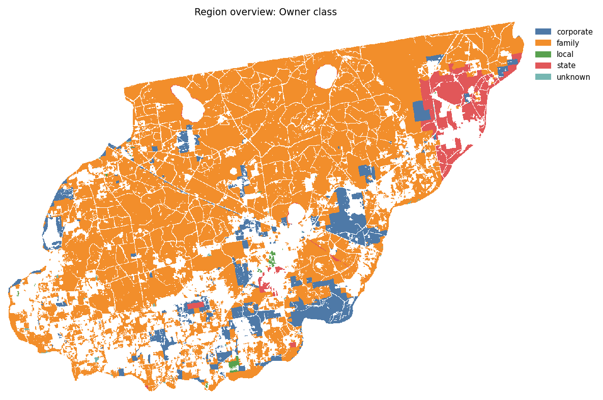
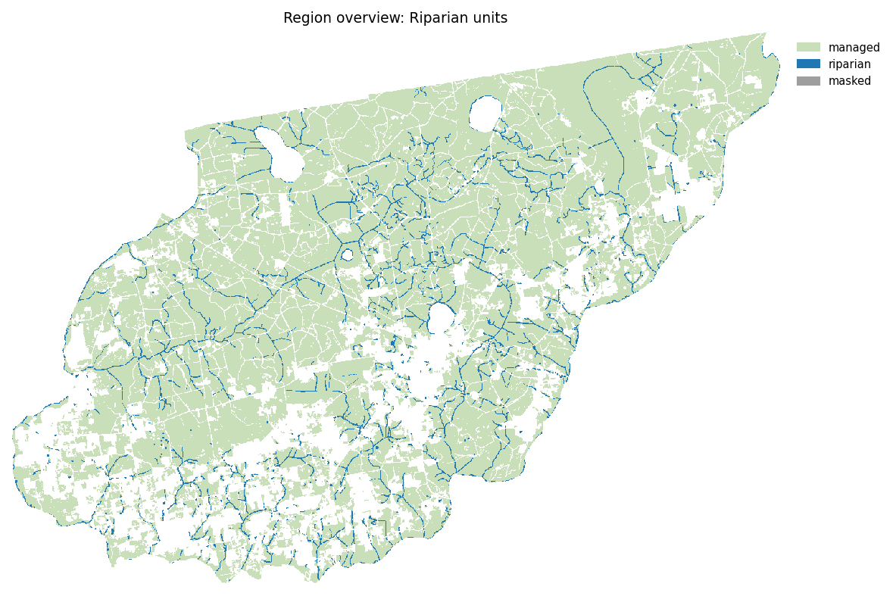
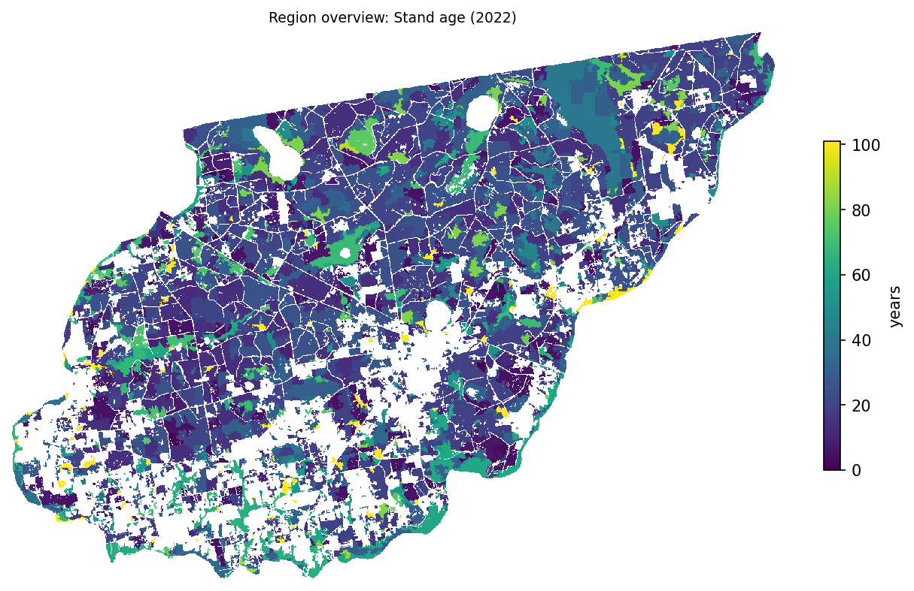
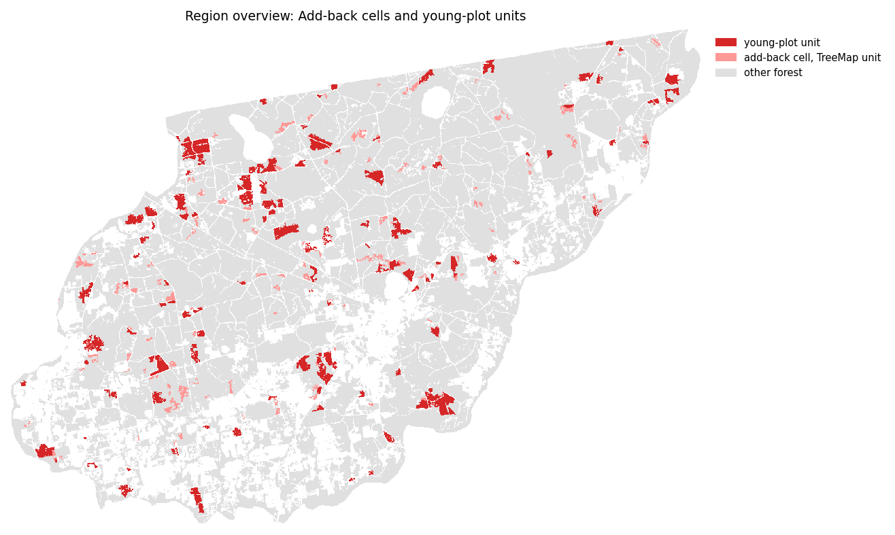
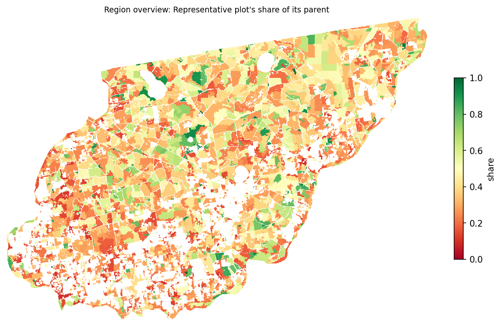
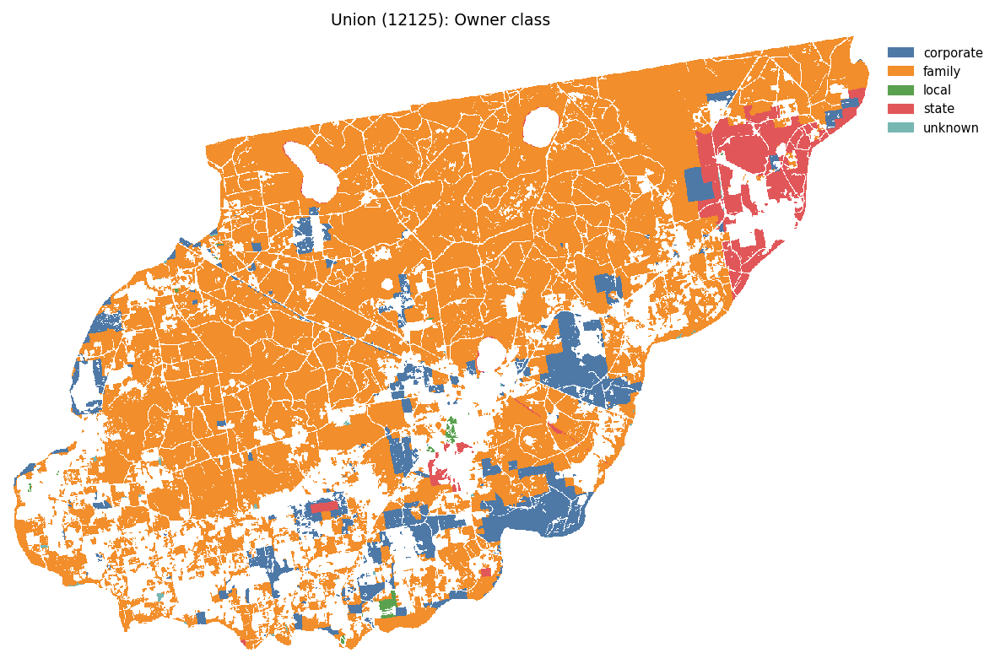
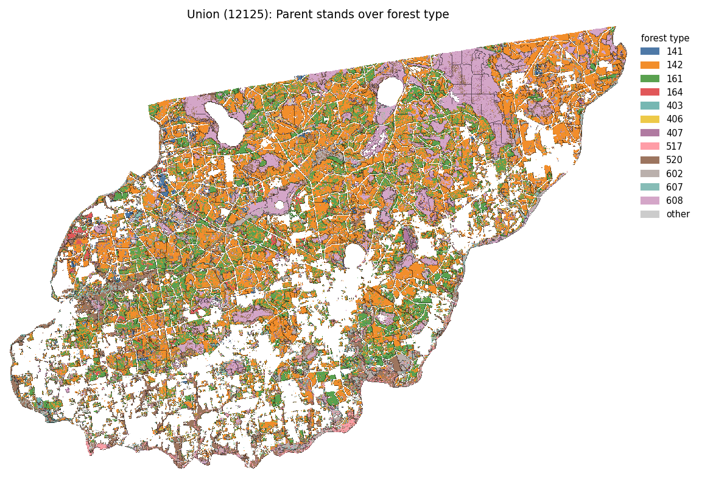
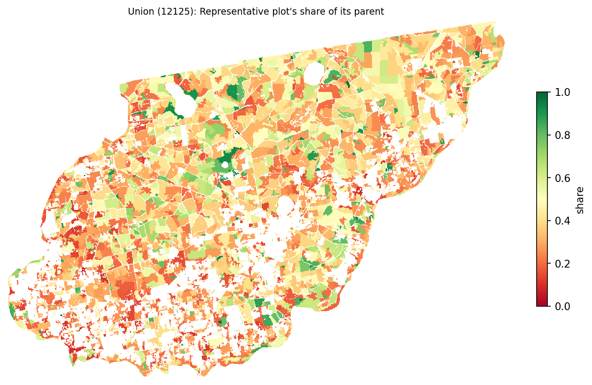
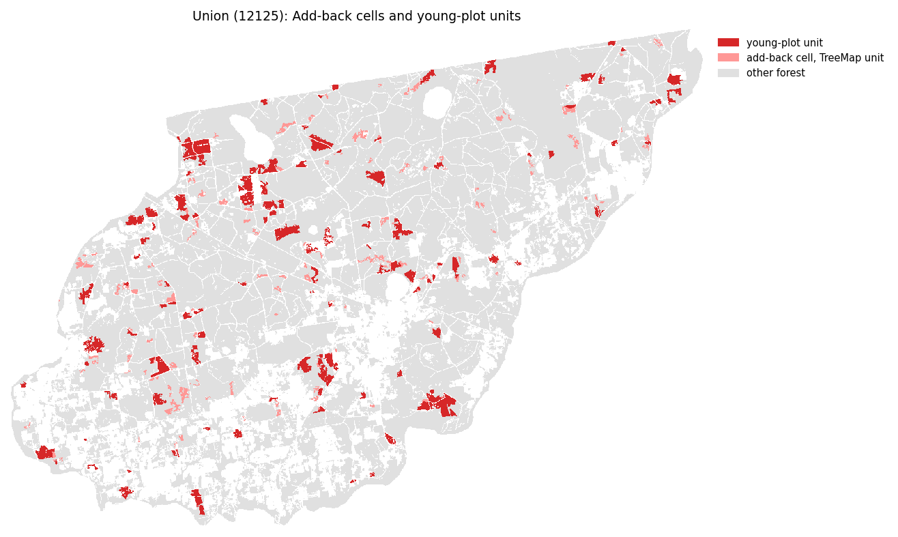

The leto stage's tables and maps, per county and for the region.









Forest cells → parent stands → units, the unit acres split into managed, unknown-flagged, riparian and masked, with the drift.
| county_fips | county | forest_cells | forest_cell_acres | deleted_small_stands | deleted_small_stand_cells | deleted_small_stand_acres | parent_stands | parent_stand_acres | units | unit_acres | deleted_speckle | deleted_speckle_acres | managed_acres | unknown_flagged_acres | riparian_acres | masked_acres | no_age_acres | add_back_cells | harris_nodata_cells | drift_acres |
|---|---|---|---|---|---|---|---|---|---|---|---|---|---|---|---|---|---|---|---|---|
| 12125 | Union | 506335 | 112606.293 | 0 | 0 | 0.0 | 5625 | 112606.2927 | 5654 | 111844.7781 | 2437 | 761.5147 | 105153.5211 | 143.9966 | 6547.2605 | 0.0 | 0.0 | 24587 | 0 | 0.0001 |
Speckle merge: units and speckle before and after, merges by step, managed acres turned grow-only, speckle kept, and owner-class acre drift.
| county_fips | units_before | units_after | speckle_before | merged_same_owner | merged_same_owner_acres | merged_other_owner | merged_other_owner_acres | merged_riparian | merged_riparian_acres | grow_only_acres | speckle_kept | speckle_kept_acres | speckle_deleted | speckle_deleted_acres | speckle_deleted_riparian_acres | owner_drift_acres_family | owner_drift_acres_corporate | owner_drift_acres_tribal | owner_drift_acres_federal | owner_drift_acres_state | owner_drift_acres_local | owner_drift_acres_unknown |
|---|---|---|---|---|---|---|---|---|---|---|---|---|---|---|---|---|---|---|---|---|---|---|
| 12125 | 12666 | 5654 | 7169 | 1807 | 416.9535 | 1558 | 408.3951 | 1210 | 228.9721 | 228.9721 | 0 | 0.0 | 2437 | 761.5147 | 289.5927 | 109.6303 | -9.5402 | 0.0 | 0.0 | -4.3465 | -5.3512 | -90.3924 |
Units and acres by county × owner class × unit class (masked land included).
| county_fips | county | owner_class | unit_class | units | acres |
|---|---|---|---|---|---|
| 12125 | Union | corporate | managed | 619 | 10221.7967 |
| 12125 | Union | corporate | riparian | 230 | 911.0502 |
| 12125 | Union | family | managed | 3193 | 89465.0022 |
| 12125 | Union | family | riparian | 1207 | 5228.9804 |
| 12125 | Union | local | managed | 37 | 234.5071 |
| 12125 | Union | local | riparian | 13 | 38.5594 |
| 12125 | Union | state | managed | 196 | 5232.2151 |
| 12125 | Union | state | riparian | 105 | 351.1122 |
| 12125 | Union | unknown | managed | 44 | 143.9966 |
| 12125 | Union | unknown | riparian | 10 | 17.5583 |
Parent-stand and unit sizes. one_cell: parents of one cell, units no larger than one cell.
| scope | layer | count | acres | median_acres | p10_acres | p90_acres | under_1_acre | under_5_acres | one_cell |
|---|---|---|---|---|---|---|---|---|---|
| 12125 | parent_stand | 5625 | 112606.2927 | 1.3344 | 0.2224 | 60.18 | 2586 | 3259 | 1674 |
| 12125 | unit | 5654 | 111844.7781 | 6.4714 | 1.3435 | 52.8001 | 0 | 2420 | 0 |
| region | parent_stand | 5625 | 112606.2927 | 1.3344 | 0.2224 | 60.18 | 2586 | 3259 | 1674 |
| region | unit | 5654 | 111844.7781 | 6.4714 | 1.3435 | 52.8001 | 0 | 2420 | 0 |
Kept donor plots per parent, the representative plot's share of its parent's cells, and TreeMap plots missing from the FIA extract.
| scope | parent_stands | donor_plots_mean | donor_plots_median | donor_plots_max | representative_share_median | representative_share_p10 | representative_share_acre_weighted | parents_under_half_share | acres_under_half_share | plots_missing_from_fia | cells_missing_from_fia | acres_missing_from_fia |
|---|---|---|---|---|---|---|---|---|---|---|---|---|
| 12125 | 5625 | 3.1012 | 3.0 | 13 | 0.5298 | 0.2451 | 0.3995 | 2224 | 84860.3122 | 0 | 0 | 0.0 |
| region | 5625 | 3.1012 | 3.0 | 13 | 0.5298 | 0.2451 | 0.3995 | 2224 | 84860.3122 | 0 | 0 | 0.0 |
TreeMap plots with no COND row in the FIA extract: their attributes came from TreeMap's value table.
| county_fips | PLT_CN | TREEMAP_VALUE | cells | acres |
|---|
Riparian acres by buffer source. Each riparian piece goes whole to the widest buffer holding its representative point.
| county_fips | county | layer | fcode | label | buffer_feet | pieces | acres |
|---|---|---|---|---|---|---|---|
| 12125 | Union | flowline | 46000 | Unclassified Stream | 35.0 | 39 | 117.4913 |
| 12125 | Union | flowline | 46003 | Intermittent Stream | 35.0 | 65 | 161.2493 |
| 12125 | Union | flowline | 46006 | Perennial Stream | 75.0 | 789 | 3474.8537 |
| 12125 | Union | flowline | 55800 | Artificial Path (NHDArea stand-in) | 75.0 | 449 | 2287.0881 |
| 12125 | Union | none | outside every buffer | 37 | 77.6873 | ||
| 12125 | Union | waterbody | 39000 | Unclassified Lake/Pond | 35.0 | 2 | 4.2424 |
| 12125 | Union | waterbody | 39001 | Intermittent Lake/Pond | 35.0 | 1 | 1.078 |
| 12125 | Union | waterbody | 39004 | Perennial Lake/Pond | 75.0 | 133 | 288.5639 |
| 12125 | Union | waterbody | 39009 | Perennial Lake/Pond | 75.0 | 50 | 135.0065 |
Seconds per step and peak memory per county. memory_scope 'process': the high-water mark of a process shared with earlier counties.
| county_fips | county | clip_seconds | attributes_seconds | segment_seconds | polygons_seconds | riparian_seconds | donors_seconds | speckle_seconds | inventory_seconds | qa_tables_seconds | write_seconds | maps_seconds | total_seconds | peak_rss_mb | memory_scope |
|---|---|---|---|---|---|---|---|---|---|---|---|---|---|---|---|
| 12125 | Union | 0.072 | 0.658 | 11.724 | 1.956 | 12.688 | 0.127 | 5.893 | 0.822 | 1.656 | 1.188 | 27.686 | 64.469 | 743.2 | process |